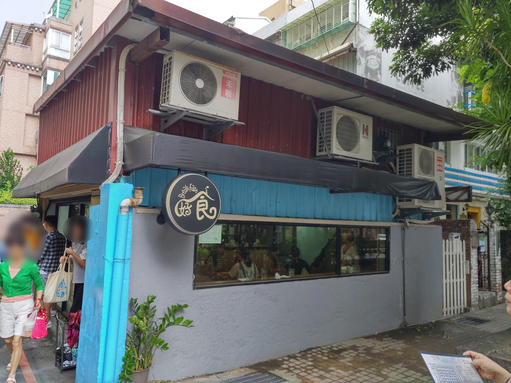
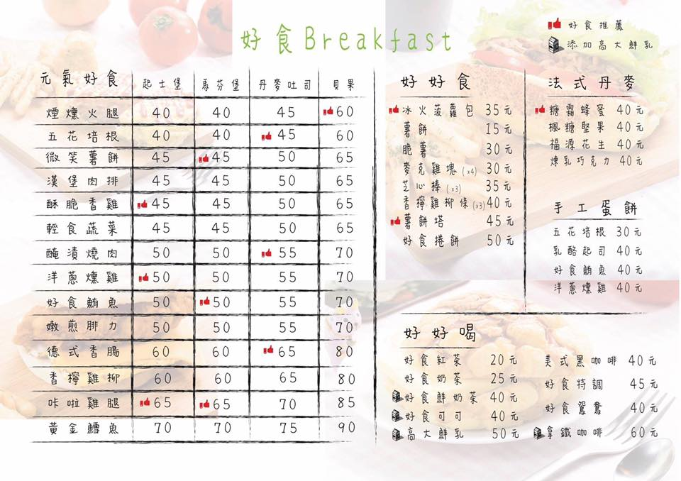
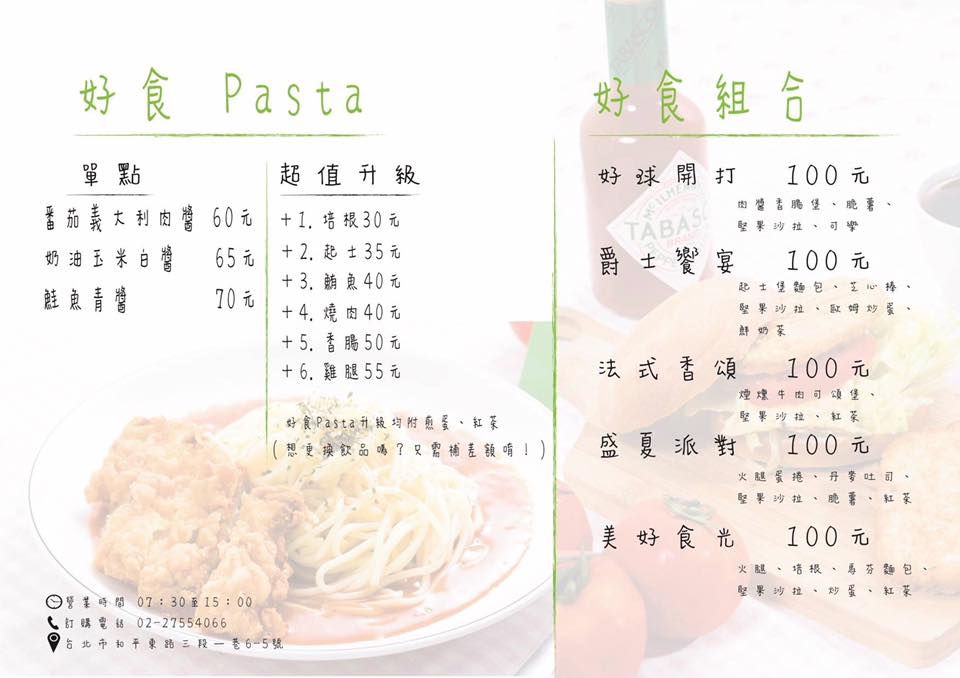
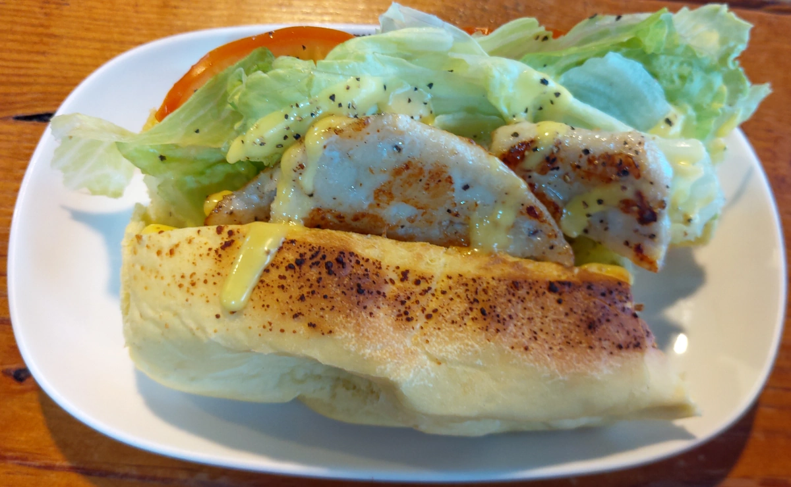
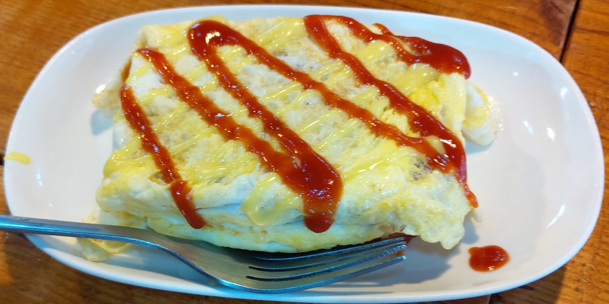
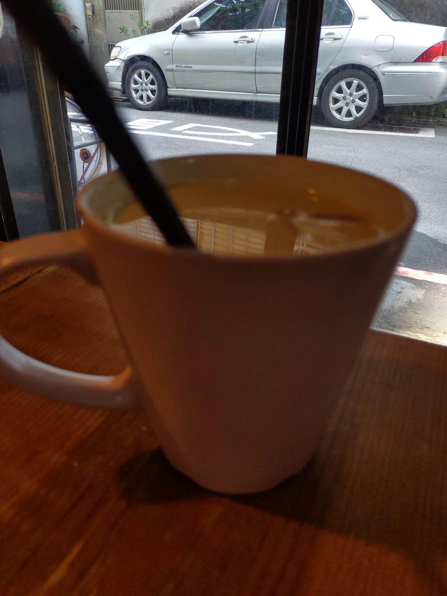
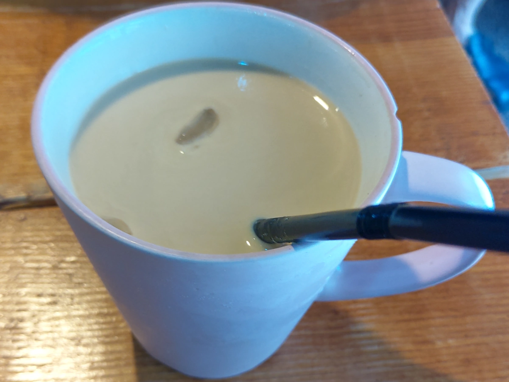

[台北] 好食Breakfast
| 餐廳名稱: | 好食Breakfast |
|---|---|
| 地 址: | 台北市和平東路二段357巷7號 |
| 營業時間: | 週一至週日 7:30-15:00 |
| 電 話: | 02 2755 4066 |
今天與友人約吃早餐，根據當天計畫行程的活動範圍，挑了一間在範圍內，Google分數又高的早餐店 - 好食Breakfast。 這附近似乎以前是眷村，靠近大馬路的地，大概都被收購，蓋成大樓了。走進巷子，一些舊舊的矮房， 還有很多狹窄的巷道，看到在地人熟門熟路地鑽進去，我這外地人看那陰暗的窄巷，要我進去還真是毛毛的。 所幸，不用鑽窄巷，就走到了好食Breakfast ，算是在公園旁，馬路旁。
這間店非常熱門，年輕人多，少數老年人也來外帶。問了一下，要等30分鐘，所幸附近有公園，還能溜搭溜搭。 
這菜單是商家FB官網抓下來的圖，想必老闆應該不會介意吧。  
嫩煎菲力起士堡，這裡的菲力是指雞肉。調味蠻好的，醬汁似乎是自製的，雞肉煎的也不錯。 
薯餅塔，該店的特色餐，薯餅炸的熟透了，疊成高高的，再加蛋。鹹度適中，好吃。 
好時特調，大概比一般特調咖啡好一些吧。 
好時鮮奶茶，也是比一般鮮奶茶好一些吧。 
這家店，乍看之下像美而美，但是吃了一口就知道 內涵強很多，感覺不是用現成美而美食材， 醬汁不錯，增色不少，也有設計幾道特色菜，會想來多吃幾次，但是希望不要再排那麼長的隊了， 不過大概很難，這次吃早餐吃到11點才結束，只有少數瞬間空出一兩個座位，簡直就是一直客滿。 唉，好吃的店總是排隊。